Doggytron DoggyTron 是众筹和社区支持的新的 gowing TRON 高收益投资平台（HYIP）。这是一个高风险、高回报的平台。从每日投资回报率和推荐收入中获得总投资价值的 300%。
Dollar Divs BTT DVC Exchange 注意：此处不会显示 BTT 合约价值和交易量。 什么是美元除法？ Dollar Divs 是一个在 TRON (TRX) 和 BitTorrent (BTT) 网络上提供游戏的平台。这些是您必须放入 TRON 或 BitTorrent 的游戏。这种加密货币
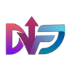 DollarFuture Dollarfuture 是一个基于 Tron 区块链的代币化多功能平台，旨在成为一种去中心化金融解决方案，适用于从分片、交换到借贷、抵押甚至游戏等高端系统的现实世界用例。 DLF
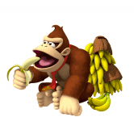 Donkey Kong Finance 你最新的 Safu Ponzi Dapp 游戏，追逐财务自由，趁着没完没了之前早点进入！ 🍌大金刚一家非常饿，需要种香蕉来拯救他们的村庄🍌 🦍Dixie、Diddy 和 Donkey Kong 都
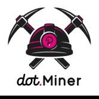 DotMiner Finance Cake Miner 根据当前的挖矿效率，每天支付 3%。随着您和其他玩家雇佣矿工、复合收益和口袋蛋糕，挖矿效率会上升和下降。 游戏的目的是比其他玩家更快、更频繁
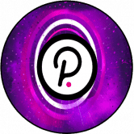 DOTMoonfarm 什么是 DOTMoonFarm？ 能源 自动做市商 (AMM) 是一种协议，为所有可用的去中心化交易所 (DEX) 提供动力。 AMM 是一种自主交易机制，它消除了中心化交易所 (CEX)
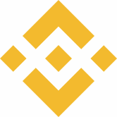 DOUBLEBNB DOUBLEBNB DEFI Stake & EARN 是币安智能链上新的稳定且盈利的农业 DAPP。质押 BNB 并在 25 天内每天赚取高达 8% 的收益，完成 200% 赌注和赚钱！您将享受稳定的被动收入和高年利
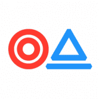 DoubleWay Doubleway 它是基于开放智能合约以太坊的二进制开放传销结构。 DoubleWay - CryptoHands 项目的二进制插件，它是一个独立项目，可实现最大程度的去中心化。 DoubleWay 是 CryptoHands 的阴暗面，具有已
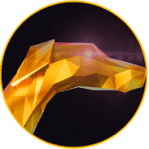 DraceInu DraceInu 是一种模因硬币，旨在在社区中产生影响。再次一起来到我们与 MetaDrace 一起度过美好时光的世界。历史将重演，DraceInu 将像 Shiba 或 Baby DogeCoin 一样！ DraceInu 从交易费
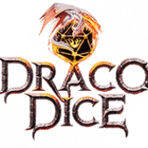 Draco Dice Draco Dice: Dicesweeper 是 Draco Dice NFT 的第一个 play-2-earn 集成。它完全可以在 Discord 中玩，无需 NFT 即可玩和赚取，并提供前所未有的独特游戏玩法。Draco Dice 是新一代代币化视频游戏的优质
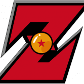 Dragon Ball Z Farm BSC链上的空闲矿工游戏 购买 Gokus，生成球并出售 BNBDragon Ball Z Farm 是一个位于 BSC 的 dApp。该平台是一款休闲游戏。这意味着，您可以被动地玩游戏并获得
Dragon Master $DMG 是#BSC Fire 上的下一代 Meme + GameFI 项目，龙主们必须拯救上等龙石——否则他们将永远失去与龙的联系！龙大师前往金字塔之地寻找七龙的秘密金字塔。他们需
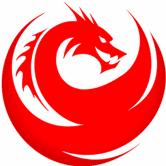 Dragon Raise DragonRaise Game 是一款去中心化的金融游戏 Binance 智能链中的工具，允许两者 被动和主动投资者赚钱。开始制作 钱，你需要注册。之后，您可以购买一个 龙，直到它死去都会获
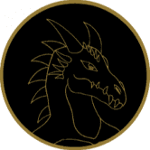 DragonFire DragonFire 的一大新奇之处是 NFT。 NFT 在 DragonFire 中产生 6% 的被动收入。每个 NFT 都有一个类型和一种能力，专为未来 NFT 所有者之间的不同游戏和战斗而设计。此外，您将可以
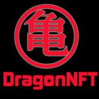 DragonNFT DragonNFT：Matic 主网上的第一个 DragonBall NFT 集合 DragonNFT 使用 NFTify 平台，我们很自豪能够率先在 NFTify 平台上推出 DragonBall 角色集合。 DragonNFT 市场支持 Matic 主网，因此所有 DragonNFT 集
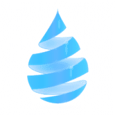 DRIP DRIP Network 的 Faucet 是一种低风险、高回报的合约，其运作方式类似于高收益存款证，每天支付 1% 的投资回报率，最高可达 365%。玩家可以通过存款、补充（复合）奖
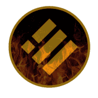 FireBusd 随着更多用户投资 BUSD，FireBusd 的价值将会上升。 将 BUSD 输入机器，每天获得 FireBusd 代币的质押奖励（每天 2%）。您可以随时领取您的 FireBusd 奖励。您不
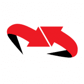 Flipbiner 扭曲的 Fomo 游戏。 10% 进 10% 出 dapp，旨在通过长期投资池帮助在持有的同时产生更多 MATIC,Flip PDF Plus Corporate 是一款功能强大、功能丰富的翻书制作工具，带有多媒体编辑器。
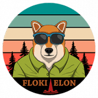 Floki Elon Floki Elon 从他的模因父亲 Doge Coin 那里学到了一些技巧和教训。 由 Doge Coin 在线社区的粉丝和成员创造的新加密货币。 Floki Elon 试图通过展示他新的改进的交易速度和可爱来打动
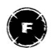 Floki Pay Floki Pay Wallet 结合了 ERC-1363 EIP，允许客户在电子商务商店和当地咖啡馆或餐厅使用加密货币，所有这些都只需几美分的费用。 我们的目标是提供去中心化、私密且即时
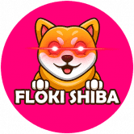 Floki Shiba Floki Shiba 很可爱，但有很多 BITE！ $FSHIB 是一种通缩代币，旨在随着时间的推移变得更加稀缺。所有 Floki Shiba 的持有者将赚取更多的 Floki Shiba，只需将 Floki Shiba 硬币放入
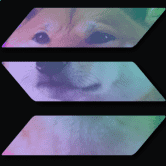 Floki Solana Token 币安智能链上的 Floki Solana 是 solana 的 meme 版本，旨在使持有者实现持有的实际目的。它是一种超通缩、反鲸鱼和反地毯的代币，它使用公牛专用机制来确保每个持有者都能
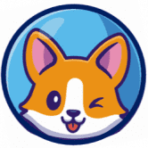 FlokiSpace FLOKISPACE TOKEN 是一个新的革命性项目，它允许所有 SHIBA TOKEN ($SHIB) HODLERS 以 FLOKISPACE 和 $DOGEtokens 的形式产生无限的被动奖励！ 当您 HODL FLOKISPACE TOKEN 时，您会在每次推荐时自动获得 BNB 和 FLOKISPACE 奖励。所以尽可能多
Foliowatch Foliowatch 是 Binance Smartchain 上第一个具有 LP 管理的智能 Defi Dashboard。 投资组合和流动资金池性能观察以及收益农业，完全去中心化。 LP 性能观察功能是 FolioWatch Dapp 的一种独特
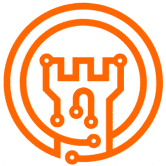 Fortpolis Bank HTML 第 1 步 - 质押 BUSD 并获得 FORT 代币的每日质押奖励（每存入 100 BUSD 每天 2 个代币）。您可以随时领取您的 $FORT 奖励。您无法取消质押您质押的 BUSD。 第 2 步 - 您的
Fried Bacon 炸培根，BNB 矿工，每天可赚取高达 10% 的收益，另外还有 10% 的推荐奖励。 我们的目标是打造稳定发展、社区持续成长的稳定 dapp。 ✅ 每日回报 : 10% ✅ 不推
Fried Chickens 什么是炸鸡？ 炸鸡是 Token Miner 元的一个有趣的旋转。 我们的应用程序充当 BNB 奖励池，只要奖励池中还有 BNB，每天都会返回池中 8% 的 BNB！用户可以在积累时选
Fried Donuts 币安智能链上的创新 DeFi 高达 15% 的每日回报和 13% 的推荐奖金 完全验证和审计的合约。 什么是“甜甜圈”？ 甜甜圈是受雇于 BNB 并努力获得奖励的矿工。 这只是我们决
Fruit Party 什么是水果派对？ Fruit Party 是在 Avalanche 网络上推出的 Baked Beans 分叉。我们创建了这个项目，旨在为世界提供一种有趣且简单的方式来赚取被动收入。 它是如何工作的？将 Avax 放
fullinvest FULLINVEST.IO 以风险调整后的回报奖励中期投资，该项目是基于 Polygon 网络的社区驱动的高收益质押协议。 用户可以通过 Polygon 的原生代币 MATIC 产生被动收入，我们创建了一个易于使
Fuloos Token Fuloos 是一种全球信任的支付机制，在汽车去中心化层上运行。 Fuloos 承诺提供一个安全、更快和改进的支付处理系统，个人可以在其中自行管理财务。 Fuloos 的开发团队正
Function Island Function Island 是波场网络上的开源 Dapp 和游戏网站。 主要特点： D1VS 游戏 - 沙漏“弱手证明”游戏，有一个转折点：D1VS 将始终具有价值，这要归功于“Pricefl
Function Island B1VS 功能岛 B1VS 是“弱手证明”/沙漏合约的实现，附带“手套模式”。 正常播放： 购买一些B1VS，开始赚取BNB分红！您的收入与您持有的 B1VS 供应的百分比成
FuryStaker Binance Smart Chain 上的高 ROI dapp/智能合约，具有更可持续的费率和无隐藏存款费用。 计划： 14 天解锁：每日收入 每天 9.60%，总计 134.40% 2）21天解锁：每天10